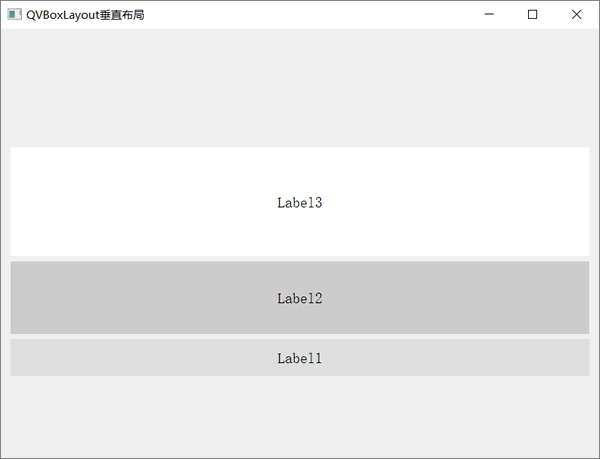

首页 > 编程笔记
Qt QVBoxLayout垂直布局（超级详细）
实际开发中，一个界面中可能包含十几个控件，手动调整它们的位置既耗时又耗力。作为一款成熟的 GUI 框架，Qt 提供了很多辅助我们摆放控件的工具（又称布局管理器或者布局控件），它们可以完成两件事：
Qt 提供的布局控件有 QVBoxLayout、QHBoxLayout、QGridLayout 等，本节我们讲解 QVBoxLayout 布局控件的用法。

图 1 QVBoxLayout垂直布局
图 1 给大家演示的是 QVBoxLayout 垂直摆放 4 个 QPushButton 按钮的布局效果。实际场景中，QVBoxLayout 中还可以放置其它控件，比如 QLabel 文本框、QLineEdit 单行输入框等。
项目中使用 QVBoxLayout 布局控件，需提前引入
QVBoxLayout 类的继承关系是
举个简单的例子：
执行结果为：
- 自动调整控件的位置，包括控件之间的间距、对齐等问题；
- 当用户调整窗口的尺寸时，布局管理器会随之调整各个控件的尺寸。
Qt 提供的布局控件有 QVBoxLayout、QHBoxLayout、QGridLayout 等，本节我们讲解 QVBoxLayout 布局控件的用法。
QVBoxLayout垂直布局
垂直布局指的是将所有控件从上到下（或者从下到上）依次摆放，例如：图 1 QVBoxLayout垂直布局
图 1 给大家演示的是 QVBoxLayout 垂直摆放 4 个 QPushButton 按钮的布局效果。实际场景中，QVBoxLayout 中还可以放置其它控件，比如 QLabel 文本框、QLineEdit 单行输入框等。
项目中使用 QVBoxLayout 布局控件，需提前引入
<QVBoxLayout>头文件。每个 QVBoxLayout 控件本质都是 QVBoxLayout 类的实例对象，该类提供了两个构造函数，分别是：
QVBoxLayout() QVBoxLayout(QWidget *parent)创建 QVBoxLayout 布局时，可以指定父窗口，那么它将作为父窗口中布局其它控件的工具；也可以暂时不指定父窗口，待全部设置完毕后再将其添加到某个窗口中。
QVBoxLayout 类的继承关系是
QVBoxLayout->QBoxLayout->QLayout。QVBoxLayout 类并没有新增任何成员方法，它只能使用从父类 QBoxLayout 继承过来的成员方法，下表给大家罗列了常用的一些：| 成员方法 | 功 能 |
|---|---|
| void QBoxLayout::addWidget(QWidget *widget, int stretch = 0, Qt::Alignment alignment = Qt::Alignment()) |
向布局管理器中添加指定的 widget 控件。 默认情况下，新加入控件的 stretch 拉伸系数为 0，表示该控件不会过多占用布局管理器的空间；alignment 是一个枚举类型参数，默认的枚举值也是 0，表示该控件会填满占用的整个空间。 |
| void QBoxLayout::addStretch(int stretch = 0) |
添加一个空白行，整个窗口中除了控件占用的区域外，其它区域可以由多个（≥0）空白行分摊，分摊比例取余于各个空白行设置的 stretch 的值（又称伸缩系数）。 strech 参数的默认值为 0，表示当窗口很小时，空白行可以不占据窗口空间。当窗口中包含多个 strech 值为 0 的空白行时，它们会平分窗口中的空白区域。 |
| void QBoxLayout::addSpacing(int size) | 添加一个 size 大小的固定间距。 |
| void QLayout::setMargin(int margin) | 设置布局管理器中所有控件的外边距，上、下、左、右外边距的大小都为 margin。默认情况下，所有方向的外边距为 11 px。 |
| void QLayout::setContentsMargins(int left, int top, int right, int bottom) | 设置布局管理器中所有控件的外边距，可以自定义上、下、左、右外边距的值。 |
| void QBoxLayout::setDirection(Direction direction) | 设置布局管理器中控件的布局方向，Direction 是一个枚举类型，对于 QVBoxLayout 布局管理器，direction 参数的值通常选择 QBoxLayout::TopToBottom（从上到下依次摆放）或者 QBoxLayout::BottomToTop（从下到上依次摆放）。 |
| bool QBoxLayout::setStretchFactor(QWidget *widget, int stretch) | 设置布局管理器中某个控件的拉伸系数。 |
| bool QBoxLayout::setStretchFactor(QLayout *layout, int stretch) | 布局管理器内部可以再放置一个布局管理器，该方法用来设置内部某个布局管理器的拉伸系数。 |
举个简单的例子：
#include <QApplication>
#include <QWidget>
#include <QLabel>
#include <QVBoxLayout>
int main(int argc, char *argv[])
{
QApplication a(argc, argv);
//创建主窗口
QWidget widget;
widget.setWindowTitle("QVBoxLayout垂直布局");
//创建垂直布局管理器
QVBoxLayout *layout=new QVBoxLayout;
//设置布局管理器中所有控件的布局方向为从下往上依次排列
layout->setDirection(QBoxLayout::BottomToTop);
//连续创建 3 个文本框，并设置它们的背景和字体大小
QLabel lab1("Label1");
lab1.setStyleSheet("QLabel{background:#dddddd;font:20px;}");
lab1.setAlignment(Qt::AlignCenter);
QLabel lab2("Label2");
lab2.setStyleSheet("QLabel{background:#cccccc;font:20px;}");
lab2.setAlignment(Qt::AlignCenter);
QLabel lab3("Label3");
lab3.setStyleSheet("QLabel{background:#ffffff;font:20px;}");
lab3.setAlignment(Qt::AlignCenter);
//将 3 个文本框和 2 个空白行添加到管理器中，它们的伸缩系数比是 2:1:2:3:3
layout->addStretch(2);
layout->addWidget(&lab1,1);
layout->addWidget(&lab2,2);
layout->addWidget(&lab3,3);
layout->addStretch(3);
//将布局管理器添加到 widget 窗口中
widget.setLayout(layout);
widget.show();
return a.exec();
}
程序中做了以下几个操作：
- 通过调用 setDirection() 方法，我们将添加到 QVBoxLayout 中的所有控件（包括空白行）按照从下到上的顺序依次排列。举个例子，由于 lab1 文本框是第二个添加到 QVBoxLayout 中的，因此最终显示的界面中 lab1 应该位于倒数第二的位置。
- 通过调用 addStrech() 方法，我们向 QVBoxLayout 中先后添加了两个空白行，它们的伸缩系数分别为 2 和 3，因此 widget 窗口中的空白区域会被平均分成 5 份，一个空白行占 3 份，另一个占 2 份。
- 通过调用 addWidget() 方法，我们向 QVBoxLayout 先后添加了 3 个文本框，它们的拉伸系数比为 1:2:3，所以当我们拉伸 widget 窗口时，三个文本框的大小（宽度）呈现 1:2:3 的关系。
- 通过调用 setLayout() 方法，layout 被成功地添加到 widget 窗口中。当然，我们也可以在创建 layout 对象时指定 widget 作为它的父窗口，两种方式是完全等价的。
执行结果为：

图 2 QVBoxLayout 实例演示
图 2 QVBoxLayout 实例演示
关注公众号「站长严长生」，在手机上阅读所有教程，随时随地都能学习。内含一款搜索神器，免费下载全网书籍和视频。

微信扫码关注公众号